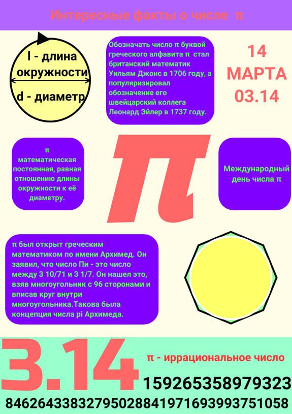

Научный руководитель Алексеева Татьяна Михайловна
Данная тема является актуальной в наши дни. Область применения инфографики очень обширна.Инфографика используется в рекламе, новостях, образование, магазинах, инструкциях по технике безопасности и в других областях. Изображения воспринимаются мозгом без согласияx человека.80 процентов информации человек воспринимает через зрение. Практичный и яркий формат,упрощает восприятие информации.Инфографика помогает запомнить информацию.Поэтому все больше компаний используют инфографику для коммуникации с клиентами. Разного рода комбинированные графики используются в бизнесе в продаже своих продуктов, на совещаниях.От качества картинки зависит доход компании.Многие выступающие часто используют графический способ передачи информации.Хорошие слайды могут привлечь внимание к выбранной теме больше,чем речь.Преподаватели применяют такой способ подачи. Ученики легко усваивают большой объем данных, всего лишь посмотрев на несколько изображений. Инфографика – это объединение иллюстрации и текста. Она помогает просто и удобно преподнести читателю тему. Реализует возможность оформлять важные,сложные для понимания данные в виде простых графических схем и рисунков.В основном, созданием занимаются дизайнеры, получившие профильное образование. Они умеют работать в разных профессиональных дизайнерских программах. Цель данной курсовой является исследование инструментальных средств для создания инфографики.
Основные задачи 1.Изучить понятие и историю развития инфографики в современном мире;
2.Исследовать инструментальные средства для создания инфографики;
3.Выбрать интересные факты о числе pi;
4.Представить интересные факты о числе pi посредством инфографики.